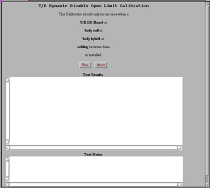

GE Exclusive Use Only
Direction 5500113, Rev# 3
Discovery MR750 3.0T Service Methods
Module Version 1.0, Version Date 4/25/07
GE Exclusive Use Only |
| Required Persons | Preliminary Reqs | Procedure | Finalization |
|---|---|---|---|
| 1 | Not Applicable | 3 mins | Not Applicable |
This calibration should be run on:
System installation
T/R DD Board replacement
Body Coil replacement
Body Hybrid replacement
Replacement of cabling between any of the above.
| Last Updated | 08/22/2005 |
Start the TR Dynamic Disable Calibration.
Restricted Service tools available to GE Field Service. Make sure your service key is installed. Select [Calibration Wizard] from the calibration menu and select [Click here to start this tool]. Once the Calibration Wizard starts, select [TR Dynamic Disable Calibration] from the menu, review and okay the pre & post-dependencies, and select [Click here to start this tool] to start the procedure. If you are unable to start the Restricted Service tools, use the non-proprietary method described in the next bullet. See Illustration 1.
Starting non-proprietary service tools: From the Common Service Desktop, select [Calibration], [TR Dynamic Disable Calibration] from the calibration menu, and select [Click here to start this tool] to start the procedure.
Illustration 1: T/R Dynamic Disable Open Limit Calibration

The calibration will complete with results given in the Test Results text area.
Perform a TPS Reset for changes to take effect.